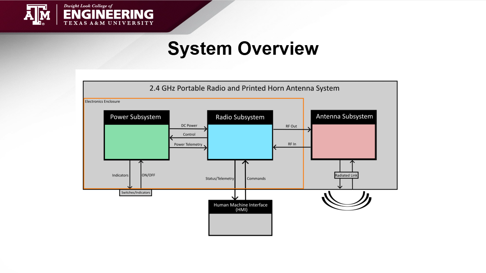
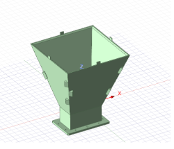
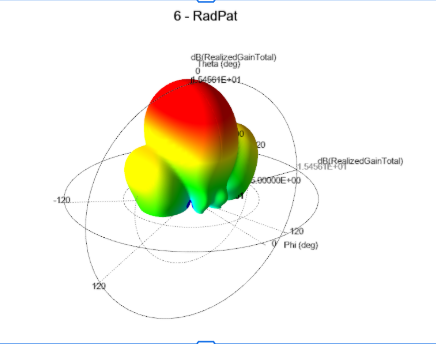
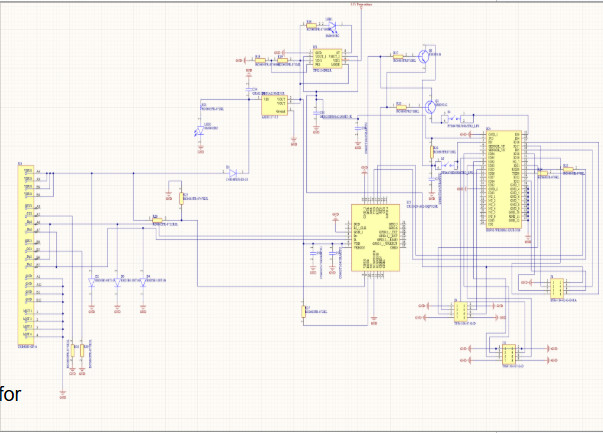
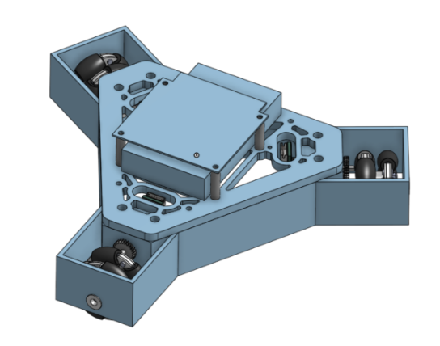
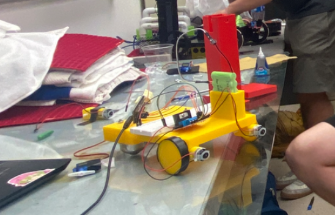
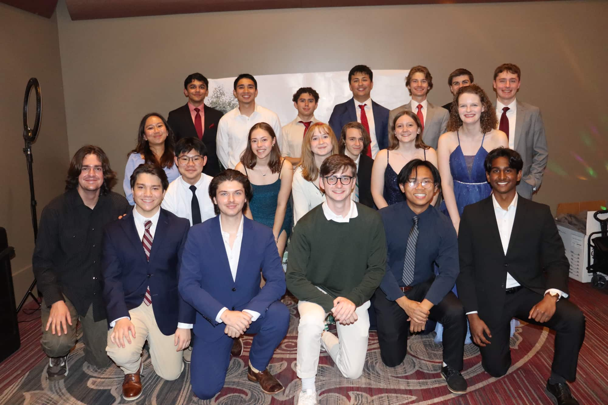
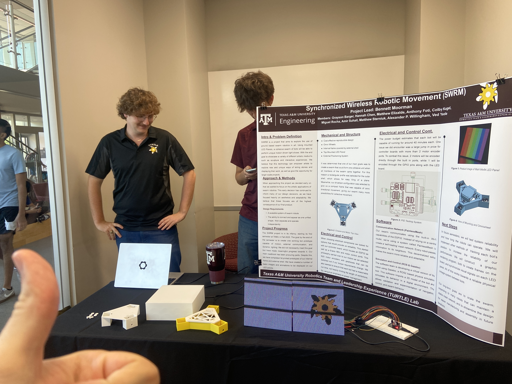

This was the project where everything came together. For our senior capstone, my team—Kyle Carlson, Dalton Luck, and I—designed and built a portable 2.4 GHz directional radio system centered around a 3D printed horn antenna. The goal was to create an affordable, accessible platform that demonstrated how antenna design, RF front-ends, and control electronics actually work together in the real world. What made this project special wasn't just the technical challenge—it was the fact that we got to see an idea go from problem statement all the way to a working demonstration, driven entirely by our own efforts and creativity [5][6].
The Problem We Solved
Long-range directional communications at 2.4 GHz is increasingly required for outdoor links, but existing solutions are often expensive, bulky, or tightly integrated. Students and hobbyists lack an affordable platform that clearly demonstrates how antenna design, RF front-ends, and control electronics work together. We wanted to change that [6].
Our solution was a low-cost, commercial off-the-shelf (COTS) portable 2.4 GHz directional radio system built around a 3D printed horn antenna. This system was designed for radio hobbyists and students who want to understand the practical side of RF engineering without breaking the bank [6].
The Waveguide Wizards Team

Team Waveguide Wizards at our final demonstration. Left to right: Kyle Carlson (Antenna), myself (Power), Dalton Luck (Radio)
Why This Project Mattered to Me
I've worked on technical projects before—like swarm robotics and various lab assignments—but this felt different. This was the first time I wasn't just one person on a large team following someone else's roadmap. I was overseeing an entire subsystem from start to finish, making design decisions, running simulations, building hardware, and seeing my work directly contribute to something we could demo and be proud of [5].
The capstone was sponsored by the Microwave Theory & Technology Society (MTTS) at Texas A&M, an organization I'm part of where we discuss antenna properties, RF engineering, and practical applications of microwave technology. Having that connection made the project feel even more grounded in real engineering practice [5].
Three Subsystems, One Goal
Our project was divided into three major subsystems: the Antenna (Kyle), the Radio (Dalton), and Power (me). Each of us took full ownership over our area, which meant we had to coordinate closely while also diving deep into our individual technical challenges. It was the perfect balance of teamwork and independent problem-solving.
🔌 Power Subsystem
Alexander P. Willingham
My responsibility: designing a portable power system that could take in high voltage from a rechargeable battery and convert it into stable, efficient power for both high-current RF components and low-power logic circuits.
📡 Antenna Subsystem
Kyle Carlson
Kyle's challenge: designing and fabricating a 3D printed horn antenna that could achieve directional gain at 2.4 GHz, with proper impedance matching and real-world performance.
📻 Radio Subsystem
Dalton Luck
Dalton's focus: implementing packet-based transmission and reception using an ESP32 and nRF24L01P radio module, with proper RF matching and firmware architecture.
My Work: The Power Subsystem
The power subsystem was my domain, and it turned out to be one of the most rewarding engineering challenges I've tackled. The core problem was this: we needed a portable system, which meant battery power. But batteries output high voltage (up to 25.2V for our 6S LiPo), and our components needed clean, stable power at much lower voltages—3.3V for the logic components and 4.4V for the RF power amplifier [6].
The challenge wasn't just voltage conversion—it was doing it efficiently, with minimal ripple, while also protecting the battery from damage and giving the system enough runtime to be practical. We were targeting at least 12 hours of operation, which is a lot to ask from a portable device [6].
Power Subsystem Specifications
What I Learned From This Subsystem
The power subsystem taught me that real engineering is about tradeoffs. I had to balance efficiency, cost, size, runtime, ripple, thermal performance, and PCB layout, all while making sure my design would actually work when we built it. Simulation is an incredible tool, but it's not a substitute for building hardware, testing it, and iterating when things don't match your expectations.
I also learned the value of working on a small, focused team where everyone owns a subsystem. Kyle, Dalton, and I trusted each other to handle our areas, which meant we could go deep without constantly checking in. But we also coordinated regularly to make sure our subsystems would integrate smoothly. That balance between independence and collaboration is something I'll carry into future projects [5].
The Other Subsystems
Kyle's Antenna Work was impressive. He designed a WR430 horn antenna in simulation, optimized it for 2.4 GHz, and then worked through the manufacturing process of 3D printing and metallizing the structure. We experimented with acetone vapor smoothing to reduce surface roughness before electroplating, and Kyle ran countless simulations to figure out the minimum metal thickness we'd need for proper conductivity and RF performance. The final antenna achieved a realized gain of 15.45 dBi with excellent return loss (-22.24 dB), which is textbook horn antenna performance [6].
Dalton's Radio Work involved implementing packet-based TX/RX using an ESP32 and nRF24L01P module. He designed RF matching networks in Cadence AWR, laid out the PCB in Altium, and wrote the firmware architecture that handled everything from SPI communication to file transfer over the radio link. His subsystem had to interface with both Kyle's antenna and my power system, which added complexity—but he pulled it off [6].




SWRM (Synchronized Wireless Robotic Movement) is a project within Texas A&M's TURTLE Robotics organization—which stands for Texas A&M University RoboTics and Leadership Experience. The goal is to explore ground-based swarm robotics in art: using mounted 64x64 LED panels, a cohesive swarm of robots performs unique motion-driven light shows. I joined TURTLE through their Hatchling Boot Camp, which taught introductory robotics and CAD to engineering students across all fields, and then moved up to the advanced SWRM project team [4][5].
How I Got Started with TURTLE
I initially joined TURTLE Robotics to go through their Hatchling Boot Camp, an introductory program that teaches robotics fundamentals, CAD, and hands-on build skills to students from all engineering disciplines. My first project was a team challenge: design a robot that could autonomously pick up blocks. We worked in teams of three, and the project involved 3D printing, servo motors, Bluetooth connections with an ESP32, and a lot of trial and error [5].
It was a great introduction to robotics outside of a classroom setting. You weren't following a lab manual—you had to figure things out, iterate when something didn't work, and coordinate with your team to meet the challenge. After completing the Boot Camp, I applied for their advanced project teams and was accepted into SWRM [5].


The SWRM Project
SWRM is all about creating a scalable system of swarm robots that can connect to form one unified shape and then separate to operate independently. Each robot has a top-mounted 64x64 LED panel, and the swarm uses a mesh network to communicate and synchronize their movements and light patterns. The end goal is to showcase exhibitions where the robots move in coordinated patterns while displaying synchronized visuals [4].
The project is still in its early stages. When I joined, the team was working on getting the first prototype robot functional—capable of motion, external communication, and dynamic lighting. The mechanical team was designing the chassis with omni wheels and an internal frame, the software team was working on ROS simulation and mesh network communication using PainlessMesh, and the electrical team (where I was) was handling component selection, power management, and communication systems [4].
Mesh Networks & Decentralized Communication
Instead of relying on a central router, SWRM uses a mesh network where every robot passes information to its neighbors. This decentralized setup makes the swarm more reliable and adaptable—if one robot drops out, the rest can still communicate and coordinate. It's a really elegant solution for swarm robotics [4].
My Role: Electrical & Communications Subteam
I was on the electrical and communications subteam, which meant I worked closely with the computer science team to define how the robots would interact, interpret position data, and coordinate their movements. One of my main contributions was helping select components and working through how the robots would handle power management—each bot needed to run for extended periods without constant recharging, which put a lot of emphasis on efficient power budgets [5].
But my favorite contribution was a Python program I wrote that would intake photos or videos and output an RGB value map for the pixels on the robotic LED displays. The program would automatically adjust and scale the image based on the number of connected robots in the swarm, allowing us to easily map and render designs and images to be displayed during performances [5].
It was a relatively simple program from a coding perspective, but it solved a real problem: how do you take a static image or video and dynamically distribute it across a variable number of moving, coordinated robots? The answer was to treat the swarm as one large display and intelligently partition the image based on how many bots were active. It was a fun problem to solve, and seeing it work felt like magic [5].
SWRM Team Photo

The SWRM team at a TURTLE showcase event. We're still building, but the vision is coming together.
What's Next for SWRM
The project is ongoing, and future semesters will focus on testing system reliability, implementing a local positioning system (LPS) for real-time location tracking, validating movement and navigation, synchronizing LED light patterns between robots, and working toward a reliable physical linkage system so the bots can connect and separate smoothly [4].
The long-term goal is to scale the swarm to many robots that can maintain a stable mesh network and to streamline the design for easier manufacturing and assembly in future iterations. It's an ambitious project, but that's what makes it exciting [4].